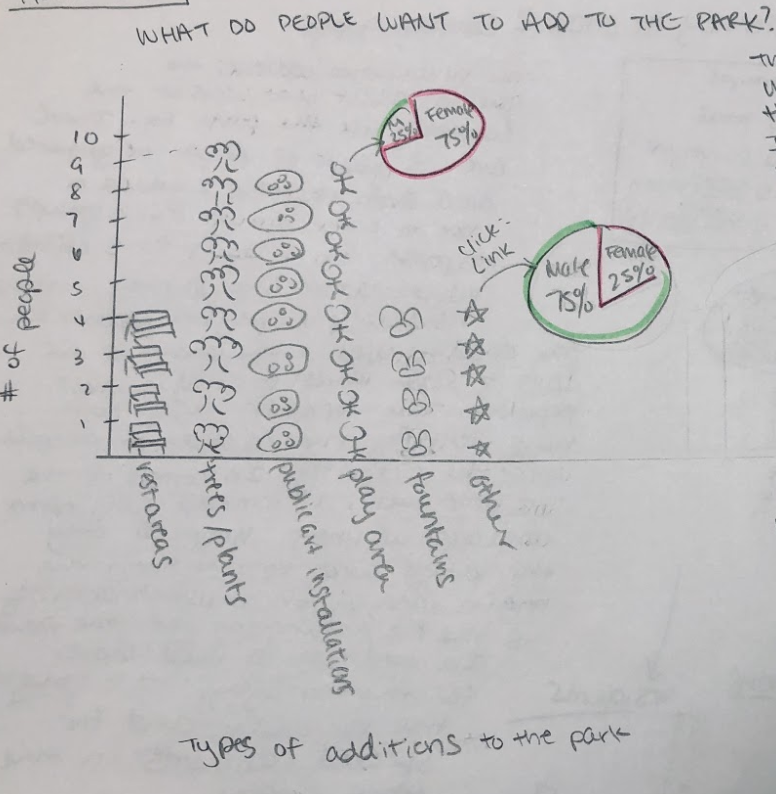
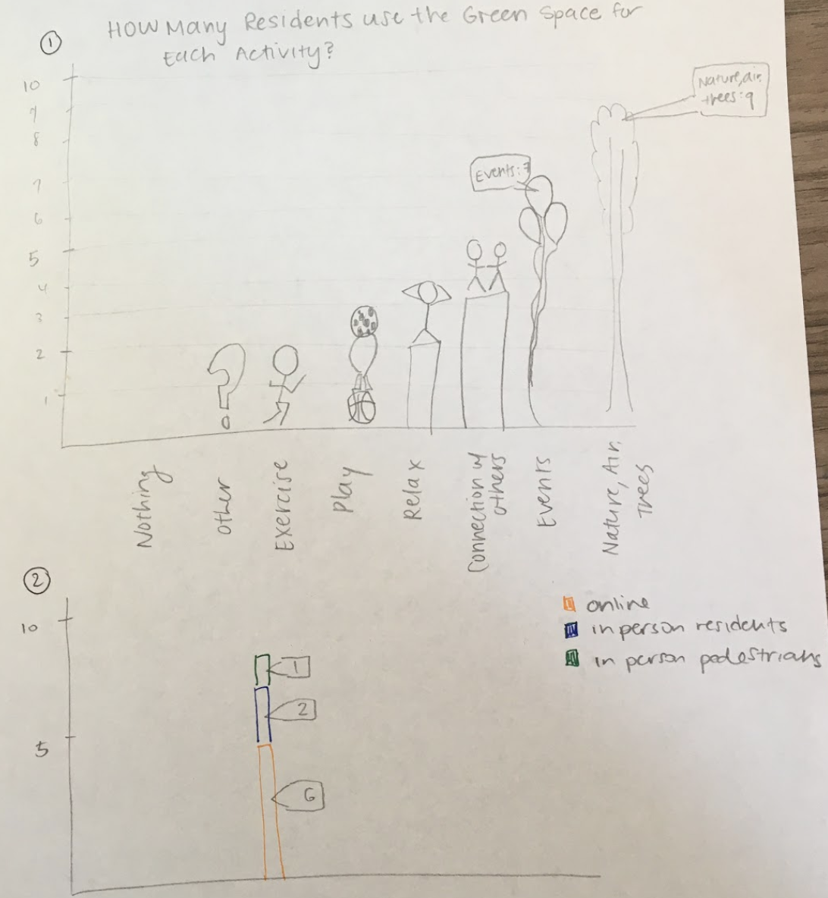
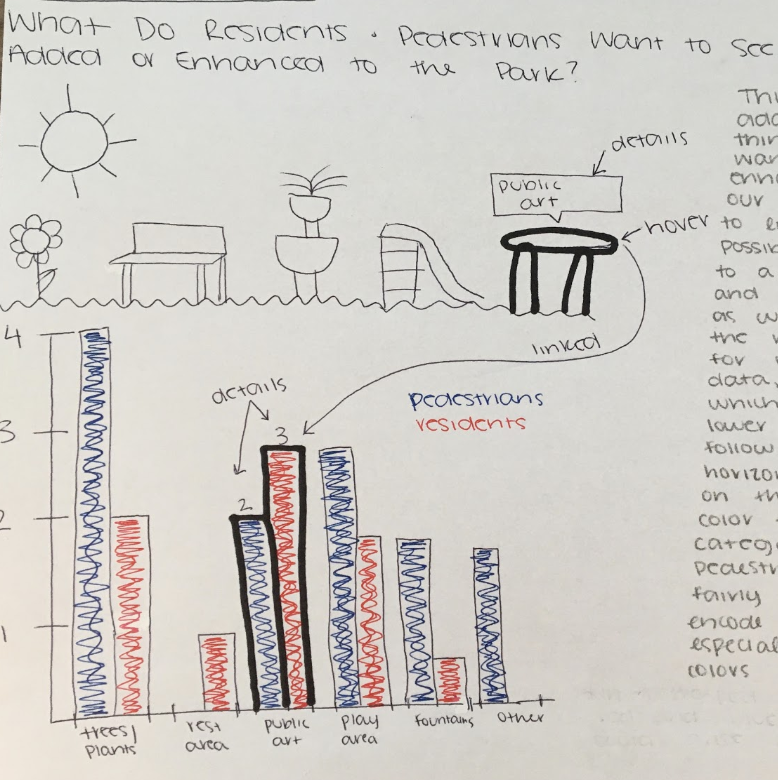

Chester Square Park was once a large, grassy park connecting the two sides of Chester Square, but has been
separated into two smaller green spaces
when Massachusettes Avenue was constructed to go straight through Chester Square. Now, the parks are not
used quite as often by Chester Square residents
and pedestrians alike, and the Chester Square Neighbors Association wanted to find ways to possibly enhance
the park so that people would get more usage
and enjoyment out of it.
Our study was centered around examining what current residents and pedestrians use
the park for, and how often the park is used.
Ultimately, we decided that making a visualization to address the question of what improvements residents
and pedestrians want added to the park would be
the most useful to the Chester Square Neighbors Association. That way, we can easily present to the Chester
Square Neighbors Association what residents and
pedestrians want to see enhanced in the park, and hopefully making those enhancements will help increase
park usage.
Visualization
Demo Video
Embedded MP4 demo video using the HTML5 <video> tag.
Visualization explanation
UI Walkthrough
Users can hover over any of the bars in the iso-type bar chart to see what the value of that category is (how
many
responses total for each survey type for that category). When users hover over the iso-type bar chart, the
corresponding bars for that
same category in the neighboring grouped bar chart get highlighted, thus introducing a linking effect. This
helps show how the response
types were split for that category. For example, if the user hovers over the "Trees/Plants" iso-type bar,
then the "Trees/Plants" bars in the
grouped bar chart all get highlighed simultaneously, showing the breakdown of responses.
When users hover over any of the bars in the grouped bar chart, the number of responses is also shown in a
tool tip, along with the response type.
We will implement linking to the iso-type bar chart as well, having the corresponding iso-type bar highlight
the amount of responses for the
individual bar that is hovered over.
Data Analysis
The data we included is derived from four different CSV files for the different our response types:
Online Residents, In Person Residents, In Person Pedestrians, and Total Responses. The Online Residents data
indicates the data we collected from responses to an
online survey sent out by Carol Blair to residents of Chester Square. The In Person Residents data indicates
the data we collected from going to Chester Park ourselves
and asking Chester Square residents in person to answer the same questions from the online survey. The In
Person Pedestrians data indicates the data we collected from going
to Chester Park and asking pedestrians walking through the park to answer the same questions from the online
survey. Total responses is the aggregation of those three groups.
We used the Total Responses data for our ISO-type bar chart, and the other three individual response types
data for our grouped bar chart for comparison.
Task Analysis
The main task that we wanted to address was the question of "What things do current residents want to see
added
to the green spaces in Chester Square Park?" The low level analytic task is to identify, the mid-level
search task is to explore, and the high level analyze task is to discover.
Design Process
Sketches and design choices to justify final visualization.



Ultimately, we decided that using a single bar chart with a juxtaposing grouped bar chart would be the most
effective way to display the answer to our main question of
"what do people want to see added to Chester Park?" It is effective because both visualizations make use of
the vertical spatial position channel in order to encode the quantity
of people who chose each enhancement as the one that they want to see in the park. This makes it really easy
for the user to quickly and effectively encode the data upon first glance,
as they can easily tell that the highest bar is the enhancement that the majority of people said that they
would like to see in the park. We made the single bar chart an isotype bar
chart because the pictures made the visualization and little more fun and engaging, and it is helpful that
the number of pictures corresponds to the number of responses, so that the
user can count them to get an exact number if they want, rather than trying to guess by following the top of
the bar to the y axis on the left, which is especially hard to do with
pictures (but we also added details on demand for this reason so that viewers do not have to manually count,
but they could if they wanted to).
We also decided to use a grouped bar
chart because we had three different groups that we surveyed, so breaking the results from the isotype bar
chart down into their respective groups allowed for the user to get even
more insight about what kinds of enhancements people want to see added to the park. The grouped bar chart
uses the same vertical spatial encoding that is easy for the user to
understand. It also uses color encoding which is a valuable tool because it allows viewers to easily discern
the different groups. We thought these visualizations would be of great
use to the Chester Square Neighbors because not only can they get a high level idea of what things people
want to see added and enhanced in Chester Park, they can also see how that
breakdown looks in terms of pedestrians and residents, and even further in terms of residents who responded
to an online survey and residents who were actually using the park. That
way, if they want to target one specific group, this tool allows them to do so.
Conclusion
We have created two data visualizations: an iso-type bar chart and a grouped bar chart. Our visualizations
help answer the
question
"What do people want to see added to the green space?", which was one of the questions in our survey to the
residents and park goers of Chester
Square Park.
The iso-type bar chart shows the total number of responses from each of our participant categories:
residents we surveyed in person, pedestrians we surveyed in person, and residents we surveyed online. There
are icons for each category that
serve as a visual aid to what the activity or park addition is. Each of these icons represents one survey
response.
The grouped bar chart shows the response counts of all three types of survey responses.
The two visualizations are linked through hovering actions: when users hover over one of the iso-type bars,
the bars in the corresponding
category in the grouped bar chart get highlighed. Similarly, when users hover of any of the bars in the
grouped bar
chart, the corresponding bar for that response gets highlighted in the iso-graph. In addition, when users
hover any of the bars
individually, or any of the iso-type bar,
a tooltip appears that tells the viewer how many responses there were for that category (in the iso-type
chart), or how many responses there were
for that survey type (in the grouped bar chart), so they do not have to count, thus easing their cognitive
load.